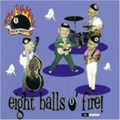

the Rockin' 8-Balls - Eight Balls O' Fire (Album, 2001)
01 - Midnight Train (2:17)
02 - Who's Knocking? (2:14)
03 - Always Late (2:39)
04 - Shirley Lee (2:00)
05 - Big Fool (2:21)
06 - Bertha Lou (1:13)
07 - It's You I Need (1:56)
08 - Freight Train Boogie (3:29)
09 - I Sure Do Love You Baby (2:48)
10 - All The Time (2:25)
11 - Love Me Baby (2:12)
12 - Forever Yours (3:10)
13 - Boppin' Highschool Baby (4:48)
14 - You Look That Good To Me (1:51)
© Goofin' Records :: [GRCD 6108]
Notes
Finland.
My experience is based on digital release of these recordings (2009), thanks to Goofin' Records and the Rockin' 8-balls for the ability to buy it via all these modern digital channels. And, as a result, hear this tune!
Sixth track with unexpected and sudden end; there is also 'clear' bonustrack.
reference information: Discogs®
Review
054/366 (Project 366)
Very lovely and raw Rockabilly from amazing band.